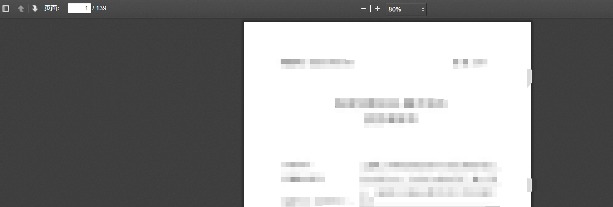
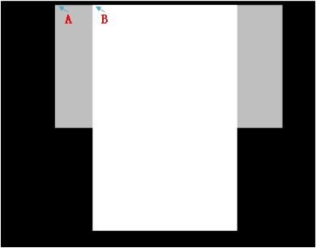

引言
又接到老板任务，需要从一个预览pdf的网页强行下载这个pdf。多反人类呢？ 它网页css配置中采用了限制最大加载策略，每次只能显示10张，所以不能直接用浏览器的打印成pdf。 不是万不得已， 笔者不会采用最蠢方式完成重复性劳动的。尝试了采用爬虫获取， 但无奈前端方面技术太菜， 无法绕过最大显示设置， 即使能绕过， 显示还可能有问题。 无奈只能用最土的方法， 模拟鼠标键盘操作来用截图功能保存jpg，再转pdf。
问题初探
 页面中值得注意的是， 不仅有竖页，也有横页，抽象布局如下  为了视觉上区分方便，这里灰色代表横页， 白色代表竖页，他们在实际中均为白色，以下所述所有颜色均为实际颜色。A、B为两个比较靠近页面顶部的，在一条水平线上的的两个点， 要注意选点时不要让他们超出自己的竖边，否则他们两者没有鉴别性。 发现可以通过两点所在像素的色彩值(RGB)，判断页面滑动的情况。 当A为白色时，表明滑动到横页。 当A黑，B白时，表明滑动到竖页。其他情况时， 表明滑动到两页间隙处。
当可以判断位置时，其他所有步骤都迎刃而解。
因此, 设计了如下简单的算法来实现自动滚动截屏
flag = 1 #表示两点目前是否在间隙处，是1，不是0
while True:
页面下滚 #下滚距离不要超过间隙距离，否则有可能跳过
判断A点颜色，判断B点颜色
if A为白色 且 flag==1 时：
截图示意图灰色部分的横页
页面下滚
flag = 0 #不设置为0会导致每滚动一行就截图一次
elif A为白 且 B为黑 且 flag==1 时：
截图示意图白色部分的竖页
页面下滚
flag = 0
else：
flag = 1 # 进入了黑色间隙代码
自动滑动截图代码
import time
import pyautogui as pg
time.sleep(5) # 留时间切换桌面到浏览器
flag = True
t = 0
while 1:
pg.scroll(-5)
r, g, b = pg.screenshot().getpixel((603, 155)) # B的RGB值
rr, gg, bb = pg.screenshot().getpixel((461, 155)) # A的RGB值
if rr > 250 : #横页
if flag:
pg.scroll(-40) #跨过页眉，根据自己情况调整
im = pg.screenshot(region=(473, 177, 1435-473, 803-177))
im.save('./%s.jpg'%t)
pg.scroll(-500) #快速下滚，留点时间给浏览器缓冲加载
t += 1
flag = False
elif r > 250 and rr < 250: 竖页
if flag:
pg.scroll(-63) #跨过页眉，根据自己情况调整
im = pg.screenshot(region=(639, 161, 1268-639, 1038-161))
im.save('./%s.jpg'%t)
pg.scroll(-730) #快速下滚，留点时间给浏览器缓冲加载
t += 1
flag = False
else:
flag = True将所有图合成dpf代码
import img2pdf
l = []
for i in range(100): #简单写了下数字， 可以根据自身需求自适应求图片数
if os.path.exists('./%s.jpg'%i):
l.append('./%s.jpg'%i)
else:
l.append('./%s.png'%i)
with open('/1.pdf', "wb") as f:
f.write(img2pdf.convert(l))
收工！
码痴， coding 改变人生！